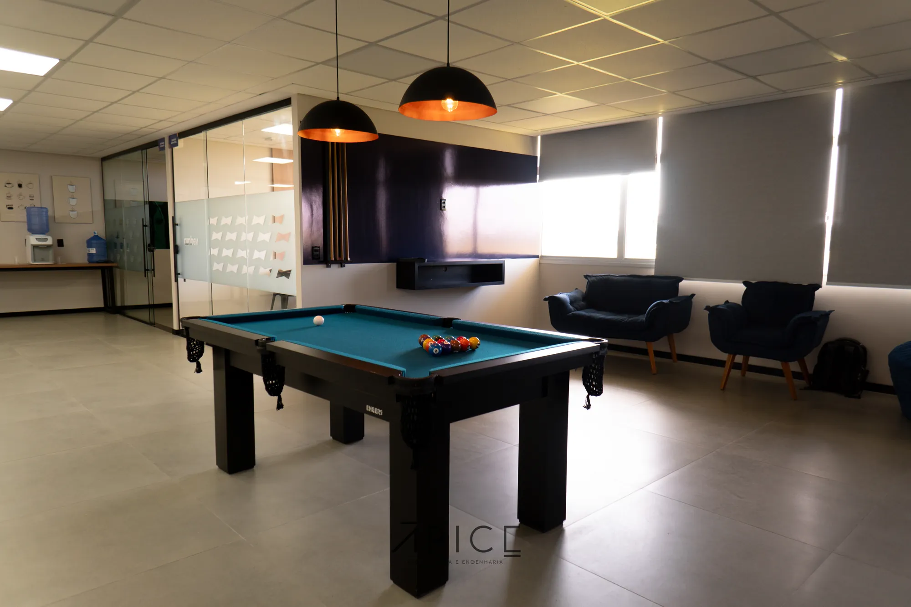
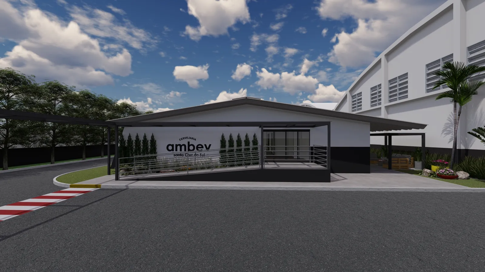
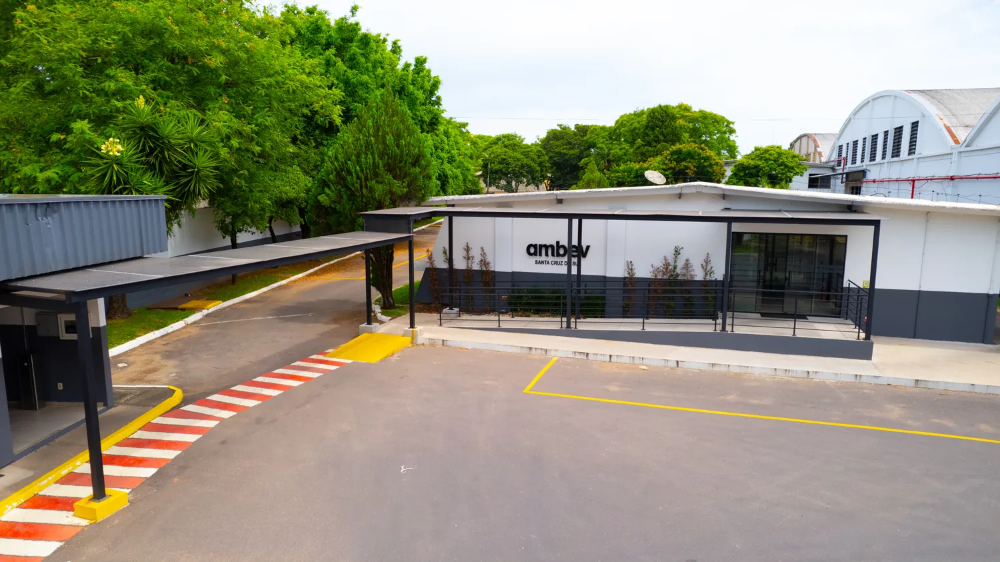
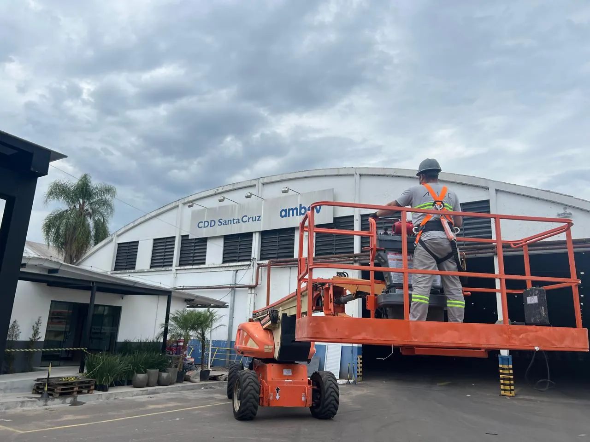
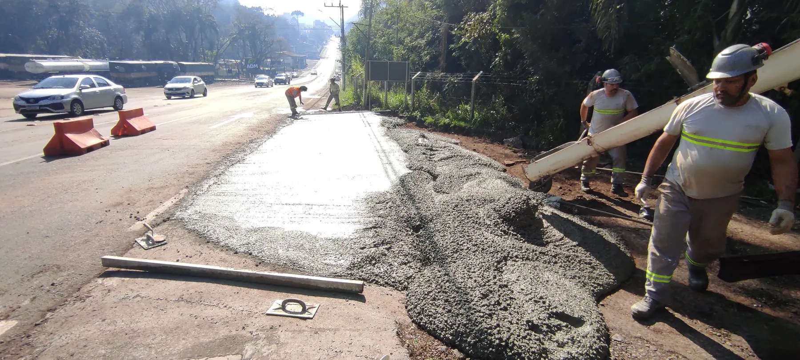

Obras corporativas e retrofit
Reforma e requalificação completa de escritórios, centros de distribuição e áreas de convivência, da demolição ao mobiliário, com a operação do cliente rodando ao lado.

Arquitetura e Engenharia
Projeto, planejamento, execução e gestão sob um só contrato, com equipe própria em campo e um engenheiro responsável do primeiro traço à entrega das chaves.
O que fazemos
Atuamos onde a obra não pode atrapalhar o negócio do cliente: centros de distribuição, plantas industriais, escritórios e agências em funcionamento.
Reforma e requalificação completa de escritórios, centros de distribuição e áreas de convivência, da demolição ao mobiliário, com a operação do cliente rodando ao lado.
Intervenções em planta industrial: estruturas metálicas e de concreto, plataformas, passarelas, bases de equipamento e adequações em áreas de processo.
Pisos industriais de concreto armado com acabamento mecanizado, recuperação de pavimento e pátios de manobra dimensionados para tráfego pesado.
Terraplenagem, muros de arrimo, drenagem, reservatórios e redes enterradas. A base que sustenta tudo o que vem depois.
Projeto arquitetônico e executivo, compatibilização de disciplinas e modelagem 3D/BIM da planta antes de a primeira parede subir.
Planejamento, cronograma, compras, medição por etapa e acompanhamento diário em campo, com relatório para o cliente.

Antes de a primeira parede subir, a obra inteira já existe em projeto.
Projeto executivo e compatibilizaçãoComo trabalhamos
O mesmo engenheiro que levanta a obra é quem responde por ela até a entrega. Sem repassar o problema para a etapa seguinte.
Visita técnica, levantamento do que existe e do que a operação exige.
Projeto executivo, compatibilização de disciplinas e orçamento aberto por etapa.
Cronograma amarrado à rotina do cliente, inclusive fora do horário de operação.
Equipe própria em campo, engenheiro responsável e medição por etapa concluída.
As-built, comissionamento do que foi instalado e acompanhamento pós-entrega.
A Ápice
A Ápice é um escritório de arquitetura e engenharia que não entrega o projeto e some. Desenhamos, orçamos, planejamos e tocamos a obra, e é a mesma equipe que responde por tudo isso.
Atuamos em obras corporativas e industriais no Rio Grande do Sul, com frentes simultâneas em Santa Cruz do Sul e Pelotas, trabalhando dentro de plantas ativas: onde a produção não pode parar, o cronograma se ajusta à operação, e não o contrário.
É esse arranjo que permite entregar retrofit corporativo, piso industrial, estrutura e infraestrutura sob um contrato só, com um interlocutor só.



E depois somos nós, com a nossa equipe, que colocamos a mão no concreto.
Execução com equipe própriaObras
Selecione uma obra para ver em tamanho maior.
Contato
Conte o que precisa ser feito, onde e para quando. Respondemos com uma visita técnica e um caminho claro, sem formulário longo, direto no WhatsApp.
Atendimento comercial em dias úteis.